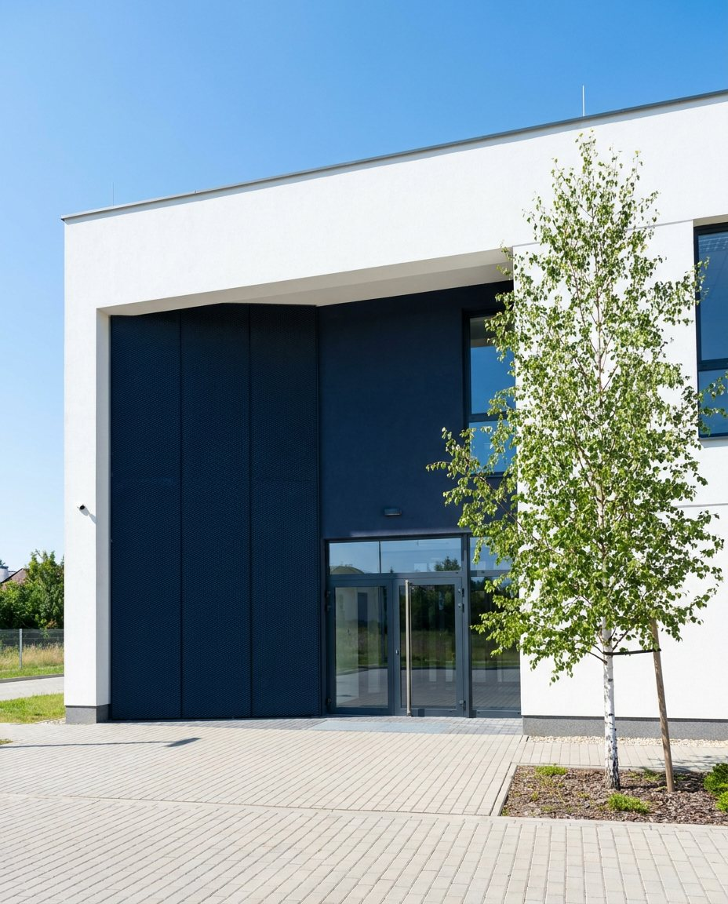

Szkolenie dla skarbników szkół
Zapraszamy do udziału w szkoleniu poświęconym gospodarce finansowej jednostek oświatowych.
Czytaj dalejZespół Obsługi Jednostek Oświatowych
Działamy na rzecz szkół i placówek oświatowych — dbamy o finanse, kadry i administrację, aby dyrektorzy, nauczyciele i uczniowie mogli skupić się na tym, co najważniejsze.
27 lat doświadczenia w obsłudze oświaty
27lat dla oświaty
Zapewniamy kompleksową obsługę ekonomiczno-administracyjną placówek oświatowych, by edukacja w naszej gminie mogła toczyć się bez zakłóceń.
Współpracujemy ze szkołami, rodzicami i organem prowadzącym, by wspólnie budować lepszą edukację.
Działamy rzetelnie i terminowo, zgodnie z potrzebami placówek i obowiązującymi standardami.
Zapewniamy praktyczną pomoc, szkolenia i doradztwo dla dyrektorów oraz pracowników szkół.
Gospodarujemy środkami publicznymi z rozwagą i przejrzystością, z myślą o przyszłości uczniów.
Dane za rok szkolny 2025/2026
Zapraszamy do udziału w szkoleniu poświęconym gospodarce finansowej jednostek oświatowych.
Czytaj dalejZasady organizacji wycieczek szkolnych oraz rozliczania kosztów w jednostkach oświatowych w roku szkolnym 2025/2026.
Czytaj dalejRusza nabór wniosków o granty wspierające rozwój edukacji w Gminie Kąty Wrocławskie.
Czytaj dalejZobacz dane dotyczące funkcjonowania szkół i placówek oświatowych w naszej gminie — raporty, analizy i zestawienia za kolejne lata szkolne.
Zobacz raporty| Wskaźnik | 2023/24 | 2024/25 | 2025/26 |
|---|---|---|---|
| Liczba uczniów | 4 312 | 4 428 | 4 512 |
| Średnia liczba uczniów w oddziale | 21,3 | 21,8 | 22,1 |
| Wydatki na oświatę (mln zł) | 78,6 | 84,2 | 90,3 |
96,7%wykonania
Plan: 90,3 mln zł
Wykonanie: 87,3 mln zł
Sekretariat czynny w godzinach pracy biura.
